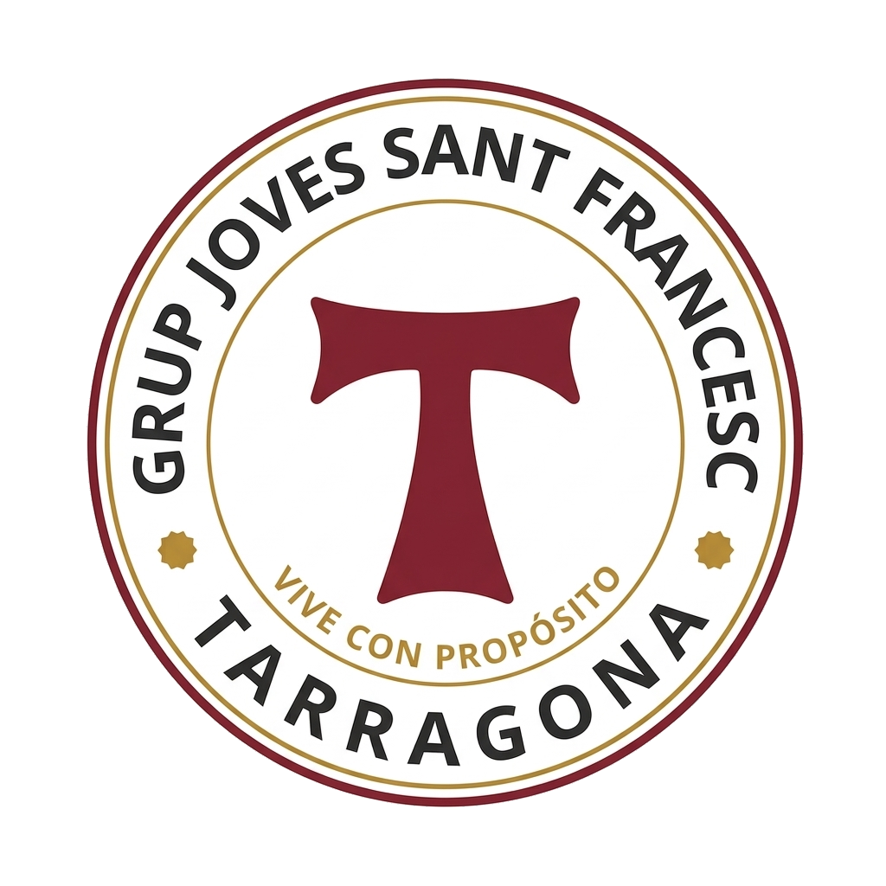
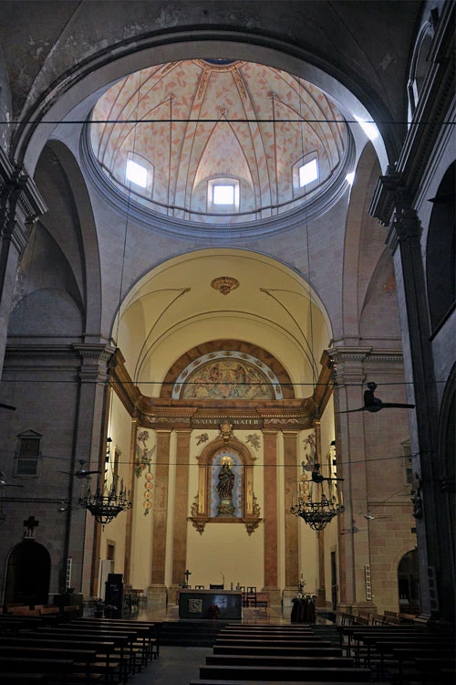
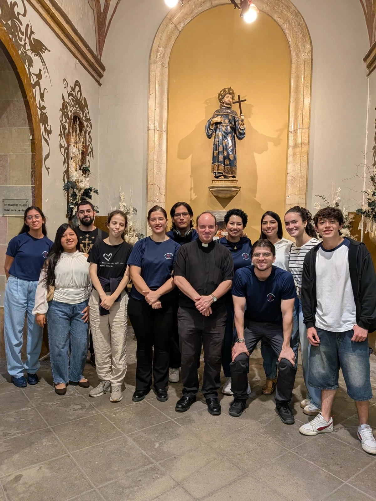
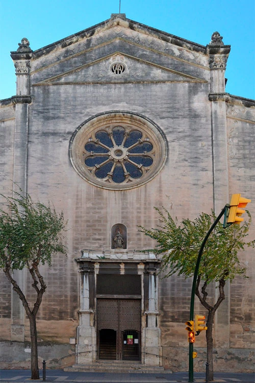
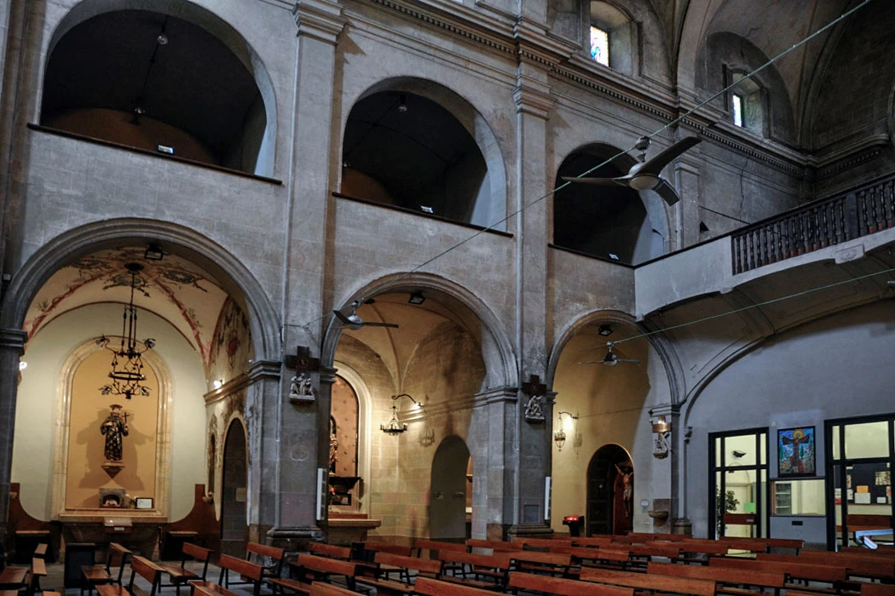
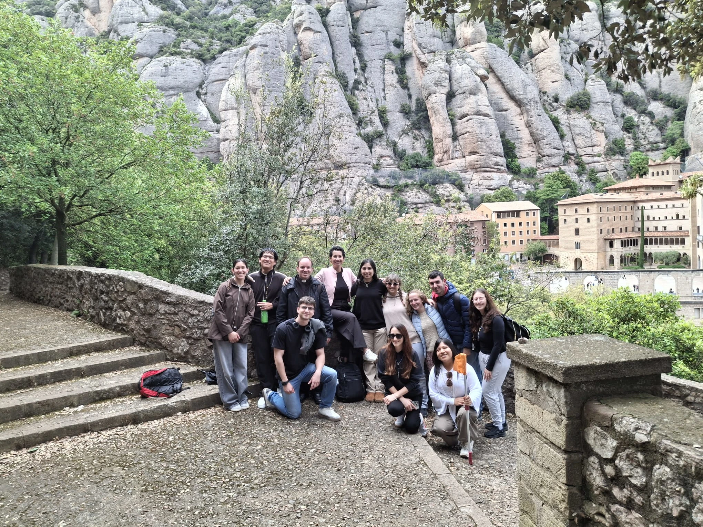
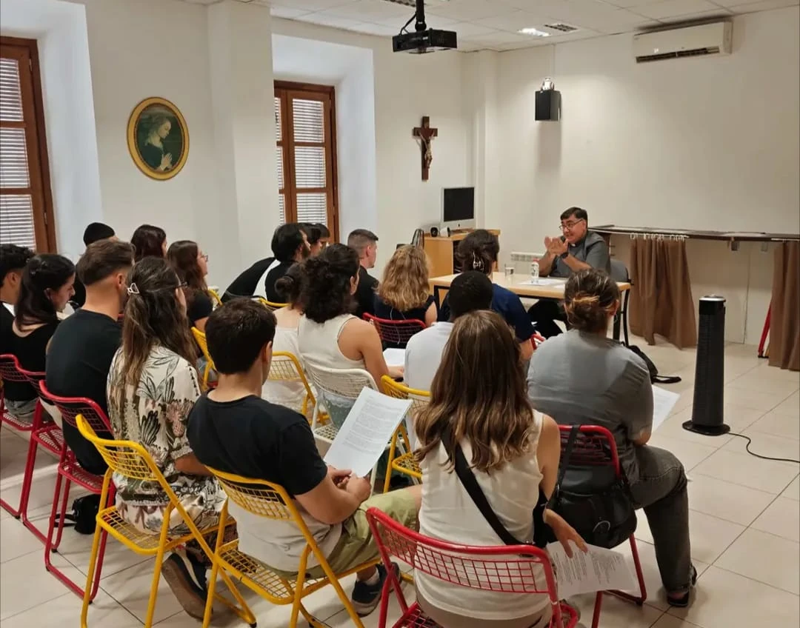
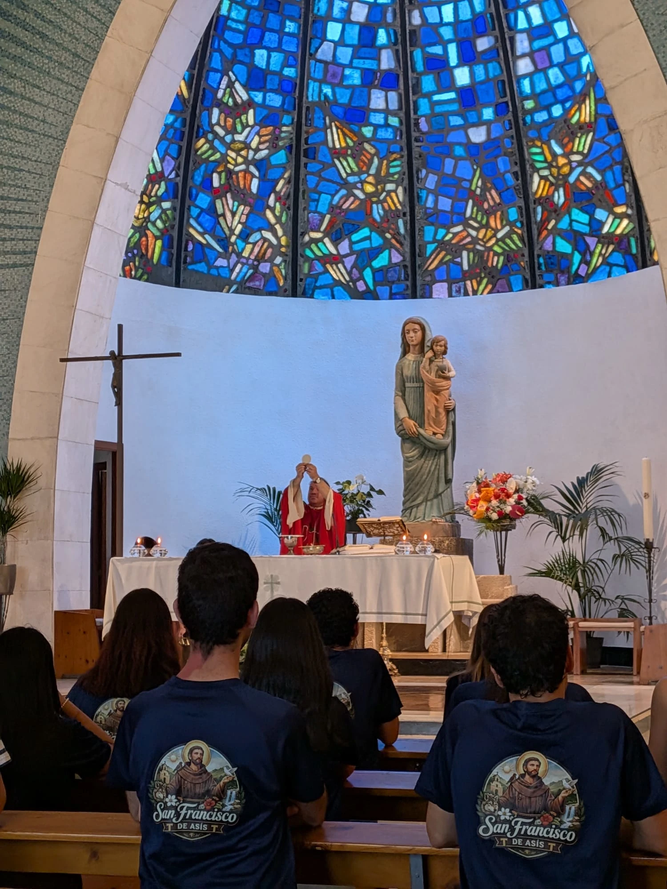

Pregària
Rosari, adoració i santa missa. Ens aturem per escoltar Déu i posar-lo al centre de la nostra vida.

JOVES SANT FRANCESCTARRAGONAUneix-t’hi ↗
✝ JOVES · FE · COMUNITAT
Som joves que busquem Déu, compartim la vida i descobrim l’alegria de viure amb propòsit. A Tarragona, hi ha un lloc per a tu.

PAXUNA COMUNITAT, MOLTES HISTÒRIES
Busques amics de veritat? Tens preguntes sobre la fe? A Joves Sant Francesc trobaràs una comunitat catòlica on compartir els teus dubtes, créixer en la fe i caminar amb altres joves.
Ens uneix el desig de conèixer Crist i viure l’Evangeli en el dia a dia, amb l’esperit senzill i fratern de sant Francesc.
Així vivim la nostra fe ↗FE QUE ES FA VIDA
Temps per a Déu, temps per als altres.
I temps per créixer junts.
Rosari, adoració i santa missa. Ens aturem per escoltar Déu i posar-lo al centre de la nostra vida.
Catequesi, tallers i xerrades per aprofundir en la fe i trobar respostes a les nostres preguntes.
Excursions, recessos, sopars i amistats de veritat. Compartim la fe i també els petits moments.
Posem la fe en acció, implicant-nos en projectes de servei a la comunitat i a l’Església.
EL NOSTRE PUNT DE TROBADA
Al cor de Tarragona, un lloc per trobar-nos, pregar i compartir la vida. T’hi esperem cada dissabte a les 17:30.
Vine un dissabte ↗

«Senyor, feu de mi un instrument de la vostra pau.»
PREGÀRIA FRANCISCANA
LA VIDA, COMPARTIDA



EL PRIMER PAS ÉS VENIR
Vine un dissabte o escriu-nos per saber-ne més.
Ens encantarà conèixer-te.
Dissabtes · 17:30 h
Sant Francesc · Tarragona